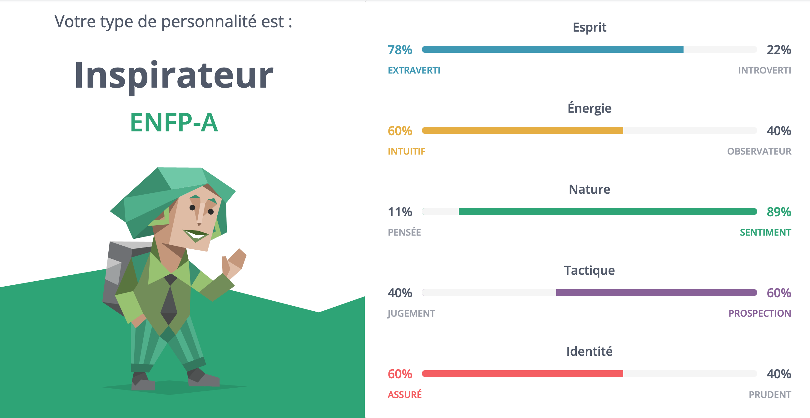

Fiche Anelys
Cet article annule et remplace tout ce qui a été dit sur Anelys.
Je poursuis le travail sur Samare avec la première fiche (provisoire) de personnage ; celle d’Anelys.
Je ne pense pas changer les prénoms. Si cela arrive, c’est que, en cours d’écriture, quelque chose de nouveau se sera imposé à moi.
Biographie
La famille d’Anelys
Anelys est la fille des fondateurs de Samare : Terance et Jade Graham.
Terance vient de la classe populaire capitaine. Ses parents fermiers ont travaillé très dur pour qu’il puisse entrer dans une prestigieuse université. Il choisit d’étudier la « physique énergétique » dans l’espoir de révolutionner l’agriculture grâce à la technologie et de rendre le métier de ses parents moins pénible.
Jade et sa sœur sont issues d’une famille aisée de la Capitale. Elles ont toujours vécu dans le centre riche et ne connaissent, a priori, rien des conditions de vie des prolétaires. Jade a choisi l’étude de la « physique énergétique » pour faire comme Johana, qui a un an de plus qu’elle.
Johana est dans la même promotion que Terance et elle est attirée par lui. Il vient de la banlieue, il est issu d’une famille pauvre et il pourrait incarner les valeurs qui résonnent en elle. En effet, elle est un peu rebelle. Elle a souvent désobéi à ses parents en se rendant dans les bas quartiers pour retrouver des amis qu’elle n’aurait pas dû avoir. En réalité, elle sait combien la vie est dure là-bas et si elle a rejoint le cursus de « physique énergétique » c’est uniquement dans l’espoir d’améliorer les conditions de vie des plus démunis.
Johana et Terance deviennent amis. Jade passe beaucoup de temps avec eux et se rapproche de Terance. Ils tombent amoureux. Influencés par les idées de Johana, ils changent leur façon de penser et perçoivent la nécessité de créer un monde meilleur. Tous les trois, ils élaborent les prémisses de la cité idéale. Ils travaillent dur durant leurs études et font partie des meilleurs chercheurs du domaine dès leurs premières années de pratique. Le gouverneur veut qu’ils travaillent à résoudre le problème énergétique majeur que connait la Capitale. Ils acceptent à conditions de pouvoir bénéficier des dernières terres sauvages pour fonder une cité sans que le gouverneur n’intervienne dans sa gestion. Ce dernier accepte, mais ils doivent lui rendre des comptes. Il veut que l’un des trois reste à la Capitale pour le tenir informer et lui apporter son expertise. Il considère cette personne comme une partie du paiement de la dette que la future cité miraculeuse aura à son encontre. Johana se propose donc pour jouer ce rôle. Elle travaille avec less deux autres à distance et préfère less laisser vivre leur amour et être heureux ensemble, même si cela lui coûte.
Terance et Jade quittent la Capitale et fondent Samare à l’âge de 26 et 27 ans. Anelys viendra au monde 10 ans plus tard, alors que la nouvelle crise énergétique qui a cours depuis près de vingt ans et que les dernières bribes d’énergie naturelle circulent dans les métropoles.
Anelys
Anelys passe son enfance à Samare. La cité est jeune et tout est à établir. Les jeunes enfants apprennent et désapprennent au fur et à mesure des changements proposés au sein de la communauté.
Anelys n’est pas la seule enfant à être née à Samare et de nombreuses familles s’installent dans la cité. Si bien qu’elle grandit entourée de beaucoup d’amis, influencée par leurs origines et par les adolescents et jeunes adultes qui s’occupent de leur éducation.
Très jeune, elle s’attache beaucoup aux gens et essaye de construire des relations profondes avec eux. C’est pourquoi elle a des amis très proches (Rena, Pensée et Neptune) et des préférences quant aux personnes qu’elle consulte pour apprendre des choses (Thémmé, qu’elle considère comme son oncle, ses parents et Arletty, qui est comme une grande sœur). Elle aime néanmoins faire des connaissances, est très sociable et parle et fait des activités avec tout le monde. Son énergie et sa facilité à cerner les gens la rendent agréable aux autres. Elle a même tendance à se donner à fond pour tout, pour faire oublier qu’elle est la fille des fondateurs.
Elle met du temps à comprendre ce qu’elle ressent vraiment pour Rena, mais quand elle le comprend, elle laisse ses émotions la dominer intensément. Elle pense avoir tellement à vivre avec lui qu’elle n’imagine pas aimer quelqu’un d’autre.
Elle ne s’intéresse à ce que faisaient ses parents qu’après leur mort, alors qu’elle vient d’avoir 16 ans. Elle découvre alors la dette que Samare doit payer au gouverneur de la Capitale et la crise énergétique qui existe dans le reste du monde. Elle ne souhaite pas quitter Rena, mais les explications données par sa tante, qu’elle rencontre alors pour la première fois, et les enjeux qui découlent de son avenir lui semblent extrêmement importants. C’est la première fois qu’elle réalise qu’il faut parfois faire passer le bien général avant le sien, car à Samare, tout va bien pour tout le monde. Elle commence donc à changer, ne cesse pas d’aimer Rena et ses amis, mais prend les responsabilités dont elle a hérité et quitte Samare.
Elle arrive à la Capitale à 16 ans et intègre le cursus de « physique énergétique » sous l’influence directe du gouverneur. Ce dernier suit son parcours et lui promet qu’elle rentrera chez elle après ses études pour poursuivre le travail de ses parents. L’échéance est plus proche que jamais. Samare est la dernière cité à parvenir à utiliser l’énergie naturelle. Les autres ont recommencé à exploiter les énergies fossiles oubliées depuis des décennies. La pollution engendrée cause des dégâts irréversibles. Anelys fonde donc ses espoirs sur son retour à Samare. Elle puise son énergie dans le groupe d’étudiants qu’elle doit côtoyer, même si elle se rend compte qu’elle a moins de facilité à se faire des amis à la Capitale. Elle travaille dur, découvre l’état déplorable du monde, commence à se forger une opinion sur la façon dont les choses devraient changer (sous la protection et les bons conseils de Johana) et décide qu’elle saisira toutes les opportunités qui lui seront données pour essayer d’influencer les décisions du gouverneur en matière de politique énergétique et environnementale.
À 24 ans, elle termine enfin ses études et se prépare à rentrer à Samare. Le gouverneur attend d’elle qu’elle comprenne pourquoi le générateur de Samare fonctionne encore et comment réparer ceux des métropoles. Pour veiller à son travail et l’assister, Conrad, le fils du gouverneur (qui a suivi le même cursus et a deux ans de plus qu’elle), l’accompagne à Samare. Ils ne se connaissent pas beaucoup, n’ont jamais vraiment parlé. Anelys sait qu’elle va devoir le cerner et le mettre en confiance pour le convaincre qu’il n’y a pas à travailler sur le générateur de Samare. La solution est toute trouvée pour elle : il faut cesser l’expansion urbaine, rendre à la nature sa place, reboiser et laisser la vie se déployer de nouveau autour des villes. Elle se fie exclusivement à son instinct et sent que si Samare peut continuer à bénéficier de l’énergie naturelle, c’est uniquement parce qu’elle est entourée de forêts et de montagnes.
Lorsqu’ils arrivent à Samare, elle se sent tout de suite attirée par Rena. Elle est excitée à l’idée de découvrir ce qu’il est devenu, mais il ne la laisse pas nouer de liens. Déçue, elle fait de nouvelles rencontres (Cyprès ?) et cherche à retrouver ce qu’elle avait décelé avec lui à l’époque. Parallèlement, elle passe beaucoup de temps avec Conrad pour le convaincre du bien fondé de son idée.
Elle réalise rapidement que la vie à Samare n’est pas ce dont elle se rappelait. Les gens sont trop centrés sur eux-mêmes et la vie de la communauté. Personne ne semble se soucier des problèmes des autres cités. Au contraire, les réfugiés des villes peuvent venir s’installer et profiter du bien être à Samare, sans que des solutions ne soient réfléchies pour éviter les migrations de population. La cité s’étend dangereusement. Anelys découvre qu’il existe une sorte de mutation spontanée parmi les animaux de la forêt. Cette maladie ne semble pas contagieuse et les samarins ne s’y intéressent pas beaucoup. Ils ne cherchent pas à savoir d’où elle vient, ni même si elle peut être évitée. Seuls Rena, Romarin et Arletty étudient le phénomène.
Anelys se détourne peu à peu de sa mission première pour comprendre cette maladie. Elle ne veut pas risquer de voir se propager ce mal si les forêts reviennent autour des métropoles. Conrad est d’accord. Il souhaite fournir un générateur fonctionnel à la Capitale. S’il s’avère que la mutation provient de l’énergie naturelle, ils ne peuvent pas permettre son utilisation massive. Cette position de Conrad, qui semble changer de personnalité, la fait réfléchir et la met mal à l’aise. Qu’est-ce qui est le plus important : que les métropoles cessent de polluer avec les énergies fossiles ou que les animaux de la forêt ne tombent pas malades ? Dans tous les cas, ces derniers en pâtissent. Il n’y a plus de temps à perdre à permettre à la nature de se déployer de nouveau. Quand Anelys découvre que Rena est aussi atteint de cette mutation, elle perd pied. Elle pensait ne plus être amoureuse de lui, mais elle a définitivement peur de le perdre. Elle veut le sauver et elle se bat contre sa logique jusqu’à céder. Comme lorsqu’elle l’a quitté pour le bien de tous, elle sait qu’elle doit privilégier ce qui aura le plus grand impact pour tous : elle doit convaincre le gouverneur que le reboisement est la solution. La maladie se propagera peut-être, peut-être pas. Les sujets atteints ne seront pas soignés tout de suite. Son instinct, auquel elle se fie si facilement et en qui elle a confiance, semble mis en branle. Elle a l’impression que cette maladie n’est pas due à l’utilisation de l’énergie naturelle directement (mais plutôt au fait que cette énergie ne peut être produite convenablement sans la présence de la vie). Elle espère ne pas se tromper et choisit de laisser tomber Rena. Pour le moment.
Elle demande à Conrad de l’aider à convaincre son père, mais elle n’est pas certaine qu’il le fera. Il lui a avoué qu’il l’aimait au pire moment, celui où elle ne sait plus qui elle est et ce qu’elle veut ; celui où elle réalise qu’elle aime toujours Rena et qu’elle est prête à sacrifier leur bonheur à tous les deux pour l’avenir de l’humanité et du monde. Elle a repoussé gentiment Conrad, mais elle n’est pas certaine qu’il en comprenne les raisons. En plus de son instinct, c’est sa faculté à cerner les gens qui lui fait défaut. Elle se sent perdue.
Quand le gouverneur est confronté à la réalité et à son manque de choix, Anelys sent une nouvelle énergie l’habiter. Elle veut utiliser sa facilité à parler aux autres pour amener les samarins à participer au grand reboisement. Elle n’aime pas être mise en position de guide, mais ses amis l’écoutent et la suivent pour permettre un monde meilleur.
Elle et Rena se rapprochent. Ses sentiments à lui n’ont pas changé non plus.
Test de personnalité
Pour adopter une personnalité cohérente, j’ai effectué le test MBTI en me mettant à la place d’Anelys. Il en ressort un profil ENFP (Extraversion, Intuition, Sentiment et Perception) dit d’« inspirateur ». Je vais en résumer les traits ici.
- Appréciation des connexions sociales et émotionnelles ;
- charmant, indépendant, énergique, compatissant ;
- tendance à considérer la vie comme un grand puzzle complexe abordé au travers d’un prisme émotionnel, compassionnel et mystique ;
- projeté sous les feux de la rampe par leur débordement d’énergie pour une cause, mais pas intéressé par cette position ;
- besoin d’innover ;
- idéaliste, imaginatif, enthousiaste ;
- pense que tout le monde devrait reconnaître et exprimer ses sentiments ;
- fait trop confiance à son intuition et peut mal interpréter les signaux ;
- préoccupation principale : harmonie ;
- très émotif et sensible ;
- explore les relations sociales, les sentiments et les idées avant de trouver quelque chose qui lui semble authentique et profond dans lequel il met beaucoup de lui-même ;
- loyal et fidèle, prend les engagements au sérieux ;
- pense que l’intimité sexuelle est un moyen positif et divertissant d’exprimer ses sentiments ;
- besoin de recevoir beaucoup de reconnaissance et d’être rassuré sur ses charmes, aime les compliments ;
- tendance à dissimuler ou éviter les conflits ;
- désir vivace de comprendre le monde ;
- ouvert d’esprit, aime rencontrer des personnes et vivre de nouvelles expériences ;
- très intuitif et perspicace par rapport aux autres ;
- système de valeurs qui fait souvent primer les besoins et désirs individuels sur les trajectoires sociales du groupe (chose qui change petit à petit chez Anelys, puisqu’elle choisit le bien commun à Rena) ;
- très têtu quant à ses valeurs ;
- a besoin de sentir qu’il est sincèrement lui-même et qu’il agit en fonction de ce qu’il croit juste (c’est pourquoi il sera difficile pour Anelys de laisser la mutation et Rena de côté) ;
- n’apprécie pas les critiques personnelles, intériorise la colère, n’exprime pas toujours ses sentiments (ce qui est parfois le cas avec Conrad) ;
- doit apprendre que développer sa capacité de jugement ne gâche pas son talent à comprendre le monde, mais l’accentue (important pour le changement d’Anelys) ;
- a besoin de temps seul pour se ressourcer et d’indépendance ;
- capable d’inspirer et de motiver les autres à atteindre le meilleur d’eux-mêmes, leur donne de l’énergie (ce qu’Anelys fait avec Conrad, et les samarins, sans s’en rendre compte) ;
- trouve une grande satisfaction à aider et soutenir les autres ;
- s’intéresse sincèrement aux autres et ressentent leurs aspirations et besoins ;
- mais fréquent qu’il ne juge pas correctement une personne tant qu’il ne se sent pas profondément compris par elle (Conrad) ;
- s’entend le mieux avec les profils INFJ (Rena) et INTJ ;
- tendance à être étouffant (Rena le ressent, car elle est trop intuitive et il ne veut pas qu’elle découvre son secret) ;
- son enthousiasme peut conduire à une déformation de la réalité (on pourrait lui reprocher d’être une rêveuse et ne pas pouvoir changer les comportements de la Capitale) ;
- entretient des relations nocives, même si elles ont été blessantes (avec Rena) ;
- certains introvertis risquent de se sentir épuisés par son énergie sa cadence frénétique en groupe alors que pris à part, il est plus calme (plus grand est le plus, plus il a d’énergie) ;
- risque de ne pas prendre soin de leur santé (Anelys tente d’ignorer et de museler ses angoisses qui la rendent malade).
Note pour une personne qui voudrait faire une objection ou attirer l’attention d’un ENFP :
- exprimer ses objections en les exposant en termes d’équité entre les personnes ;
- utiliser des phrases du type « C’est impossible… », « J’ai une super idée ! », « Je voudrais vous faire rencontrer quelqu’un… ».
Apparence physique
- Assez grande (mais pas plus que Rena et Conrad) ;
- silhouette harmonieuse (ni trop grosse, ni trop maigre) ;
- petit nez rond qu’elle fronce facilement ;
- yeux noisette ;
- cheveux blonds foncés ou châtains clairs, mi-longs.
Récapitulatif
Ce qu’il y a à retenir sur Anelys pour garder un fil cohérent à l’écriture :
- elle est sociable, énergique et chaleureuse ;
- elle suit son instinct et cerne bien les gens ;
- elle a des valeurs fortes qu’elle suit en toutes circonstances ;
- elle n’aime pas la critique et refoule parfois ses sentiments ;
- elle s’investit à fond dans une relation quand elle pense avoir trouvé une personne authentique avec qui nouer un lien profond ;
- sinon elle préfère faire des connaissances et expérimenter la vie ;
- elle a tendance à rendre les autres plus sûrs d’eux et à les inciter à donner le meilleur d’eux-mêmes ;
- elle préfère privilégier le bonheur individuel plutôt que celui du groupe jusqu’à ce qu’elle réalise que le monde n’est pas aussi agréable qu’à Samare et que partout ailleurs, il y a beaucoup à faire collectivement pour que les gens soient plus heureux.